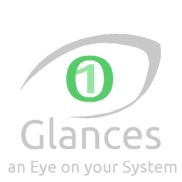

Glances : all in one monitoring shell tool
Contents
|  | |
| Software version | 1.6.1/Latest |
|---|---|
| Operating System | Debian 7 |
| Website | Glances Website |
| Last Update | 11/08/2013 |
| Others | |
{kind=link}
1 Introduction
Glances[1] is a cross-platform curses-based monitoring tool written in Python.
It avoids to run several tools to get a all in one overview of your system. For example, when you want to quickly see what's wrong on a system for diagnosis, you'll need to launch top/htop, iostat, vmstat...Glances gives you a large overview of your system health. You can then investigate with the appropriate tool if you want. But you didn't waste your time in opening several tools to get the first desired information : where does the problem comes from ? So Glances answer that question.
{kind=link}
2 Installation
2.1 Packages
The glances packages are not yet available in Debian wheezy packages. But they are in Jessie !
| |
| This will upgrade the libc6 ! |
That's why we can do APT pining to use packages :
| |
Package: * Pin: release a=wheezy Pin-priority: 900 Package: * Pin: release a=jessie Pin-priority: 100 Package: glances Pin: release a=jessie Pin-priority: 1001 |
Add as well the jessie repositories to your current wheezy :
| |
deb http://ftp.fr.debian.org/debian/ jessie main contrib non-free deb-src http://ftp.fr.debian.org/debian/ jessie main contrib non-free |
Now update and install glances :
| |
aptitude update aptitude install glances |
2.2 Pip
You can install the latest version of Glances using pip. First install dependencies :
| |
aptitude install python-pip python-dev |
Then install Glances :
| |
pip install Glances |
You're now able to launch glances in command line :
| |
glances |
2.2.1 Upgrade
To upgrade your Glances version:
| |
pip install -- upgrade glances |
3 Configuration
There is nothing especially to configure as defaults options could be enough for a large set of users. Anyway, you can add or change several options of the default configuration in /etc/glances.glances.conf.
An option comes with 1.7 version is the possibility to watch at a specific software. Let's say Nginx for instance. You can ask to glance to look at it by adding those lines :
| |
[monitor] list_1_description=Web Nginx Server list_1_regex=.*nginx.* list_1_command=nginx -v list_1_countmin=1 list_1_countmax=4 |
- list_X : replace X by 1 to 9, this is the information for additionals software (here Nginx)
- description : set the software description (16 chars max)
- regex : regex to group software informations
- command : the command to run that will show informations in glances
- countmin : minimum number of informations to show
- countmax : maximum number of informations to show
You can add other softwares by adding same lines with list_2, list_3....
4 Client/Server mode
There is also a client/server mode. You can run a server like that :
| |
glances -s |
And you can connect clients :
| |
glances -c <server> |
Replace <server> by the server IP.